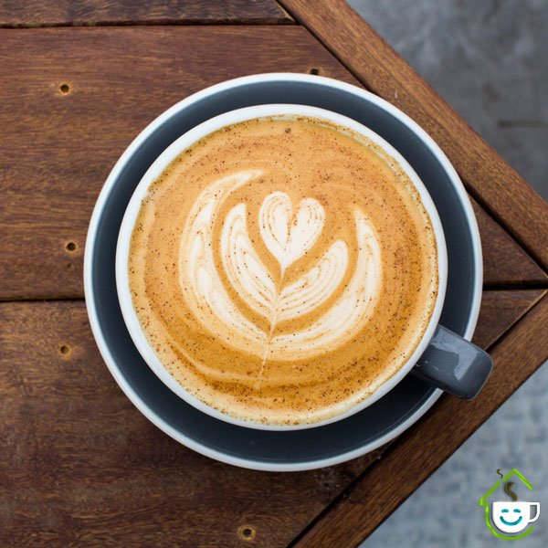

Menu
-
 چیز کیک ها
چیز کیک ها
-

کافئین ها

وقتی وارد کافه آسمان میشوی، انگار از هیاهوی شهر جدا شدهای و قدم در دنیایی آرام و لطیف گذاشتهای. نورهای گرم و ملایم از میان پنجرههای بزرگ میتابند و فضا را مثل غروب یک روز آرام به رنگ طلایی در میآورند. دیوارها با ترکیبی از رنگهای روشن و بافتهای طبیعی طراحی شدهاند؛ چوبهای گرم، گیاهان سبز و جزئیاتی که حس زندگی را در هر گوشه زنده نگه میدارند. صندلیهای راحت و میزهای چوبی صمیمی، تو را دعوت میکنند بنشینی، نفس عمیق بکشی و از لحظهات لذت ببری.

تابلوی زیبای کافه آسمان با طراحی خاص و مدرن، مثل امضای برند، هویت کافه را به رخ میکشد. شیشههای بزرگ و شفاف، تصویری از روشنایی و باز بودن فضا را نشان میدهند و رهگذران را به دنیایی آرام، خوشعطر و دلنشین دعوت میکنند. در شب، نورهای ملایم و جذاب نمای خارجی، کافه آسمان را به نقطهای چشمگیر و متفاوت در خیابان تبدیل میکند؛ جایی که از بیرون هم حس خوبش دیده میشود. **کافه آسمان؛

وقتی هوس یک نوشیدنی خنک، خوشمزه و دلچسب میکنی، میلکشیکهای کافه آسمان بهترین انتخاب برای تو هستند! 🍦🍓 ما در کافه آسمان، با عشق و دقت، طعمهای بینظیری را برای میلکشیکهایمان خلق کردهایم تا هر جرعه، تو را به اوج لذت ببرد. از طعم کلاسیک و دلنشین وانیل و شکلات گرفته تا طعمهای میوهای تازه و هیجانانگیز، هر سلیقهای را راضی خواهیم کرد.
چیز کیک ها

کافئین ها